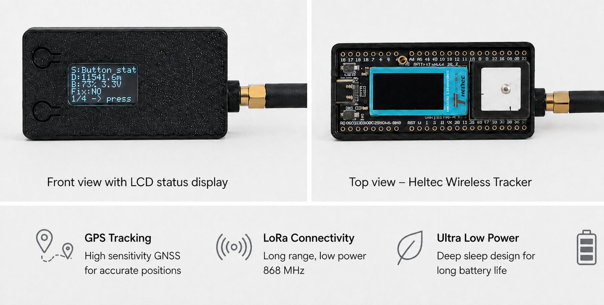
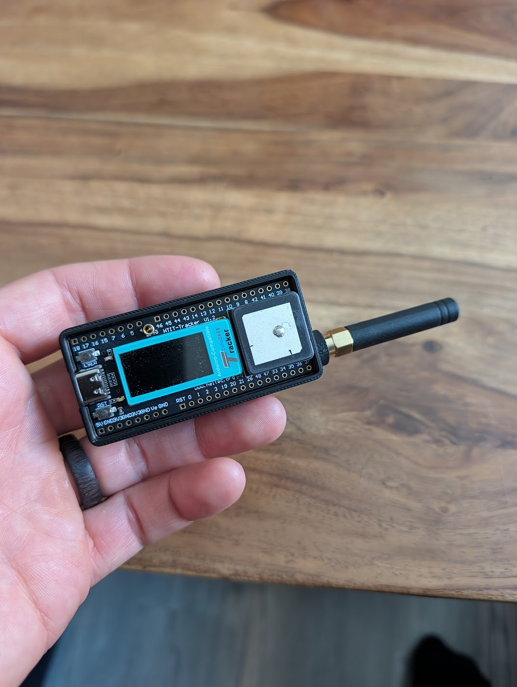
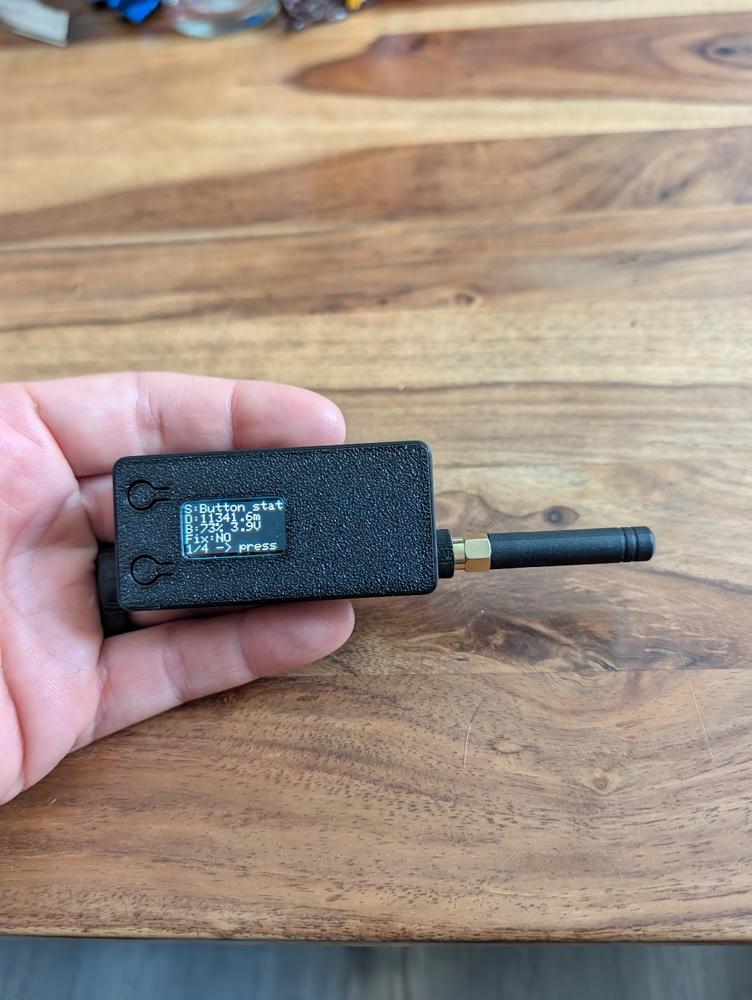

Hardware
Prototype fast, qualify deliberately
Development boards make firmware progress fast. A wearable production tracker needs a measured power design, appropriate antennas, protected battery and mechanically safe enclosure.
Supported prototype boards
Heltec Wireless Tracker
ESP32-S3, SX1262 and integrated GNSS. This is the preferred current tracker development target.
Heltec WiFi LoRa 32 V2
Matches the checked-in SX1276 GPIO map, but is not the recommended basis for new hardware.
ESP32-S3 + SX1262 gateway
A current Heltec V3/V4-class board is the intended next gateway platform. The port is still a P0 TODO.
Current prototype

Tracker, battery, and the work still ahead
This image presents the current prototype direction. It is illustrative; final enclosure, antenna, charging and mounting design still need qualification.


Observed battery trend
About 7–9 days of live tracking in the observed conditions
A preliminary 12-hour run moved from 82% to 76% with BLE off, adaptive batching, a 60-second moving interval, poor GNSS conditions and normal LoRa connectivity. That indicates roughly 0.5% per hour. Treat these as early field estimates, not a battery-life guarantee.
Production tracker direction
- ESP32-S3 while the firmware depends on its Wi-Fi/BLE/Arduino stack
- SX1262 or a certified module and region-specific matched antenna
- Low-power GNSS such as u-blox MAX-M10 after a driver and antenna evaluation
- BMA400-class wake-on-motion accelerometer
- MAX17048-class single-cell fuel gauge
- Protected cell, temperature-qualified charger and service disconnect
- Separate GNSS and UHF antenna keep-outs
Do not select a secure element until the provisioning/key hierarchy and component lifecycle have been reviewed.
Mechanical and animal safety
- Rounded, snag-resistant, waterproof enclosure with strain relief
- Breakaway behavior under hazardous load; no rigid entanglement point
- Distributed weight and validated fit under movement, sweat, rain and mud
- RF tests in the actual worn orientation because bodies and wet materials attenuate UHF
- Inspection process for battery swelling, impact damage and seal failure
LoRa Tracker is not a safety device or the sole means of locating an animal.
Before hardware freeze
Measure every power state, GNSS cold/warm acquisition, every LoRa TX level and all failure/retry paths. Run temperature battery tests, worn-orientation RF surveys, ingress/impact tests and multi-day reconnect tests. Size the cell from measured distributions with aging and cold margin.